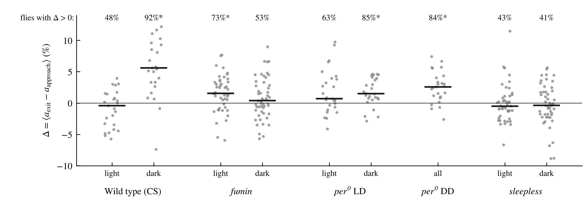
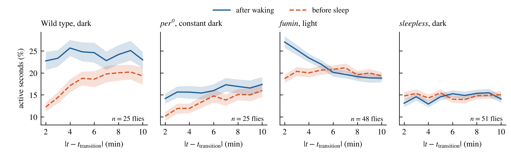
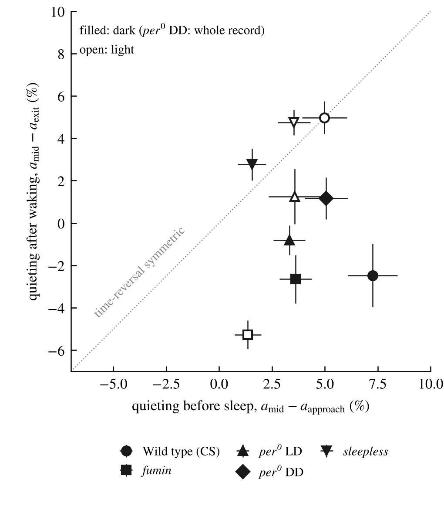
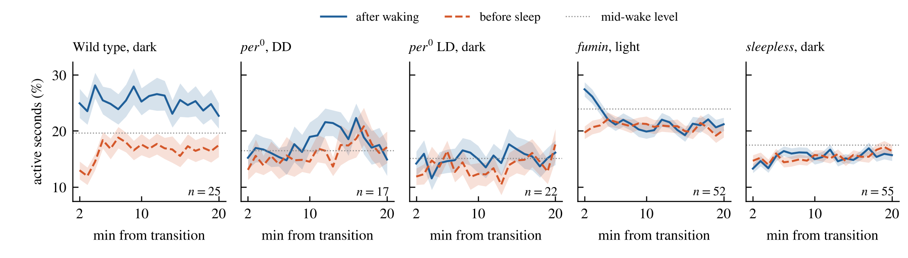

Where the analysis stands, what each result taught us about the measurement, and the options for a design that can answer the question. Written for deciding the next step. Every number is in hmm_audit/RESULTS_LEDGER.md, next to the plan that was committed before it was computed.
Think of the 3-state HMM as a particle hopping between three wells. A fly leaving sleep (H3) for wake (H2) either jumps directly, or stops in H1 on the way. Xn compares the two paths for sleep→wake, and Yn does the same for wake→sleep:
Xn = (N312 − N32)/(N312 + N32) Yn = (N213 − N23)/(N213 + N23)
When two hidden states emit identically, only combinations of rates that are invariant under mixing those two states are observable. Formally, every P′ = S P S⁻¹, with S mixing H1 and H2 and preserving probability, gives exactly the same likelihood for any recording. It is a gauge transformation: like measuring only total Sz of two spins and asking which spin flipped. Single-channel physiology knows the same result as aggregated Markov models (Fredkin & Rice 1986; Kienker 1989). With n identical-looking states, n(n−1) rate combinations cannot be determined, however much data you collect.
Per-second movement counts carry more than the binary trace. A 4-state model was needed, chosen by predicting held-out days. Its relaxation spectrum (the eigenvalues of the transition matrix, read as timescales) splits into fast modes of a few seconds (moving and pausing) and one slow mode of minutes (switching between a sleep-like and a wake-like regime). No second slow mode appears, i.e. no long-lived transitional regime.
In the 2–6 minutes before sleep onset, CS flies move less than in mid-wake (light p = 0.001, dark p = 3×10⁻⁵). This is a transitional signature in the raw counts, though it does not show whether a distinct state or gradual slowing produces it.
With 3 count states, H1 is a brief pause (CS, nearly identical to sleep in emissions) or a low-activity state (fumin), lasting seconds. With 4 states it falls inside the sleep-like or wake-like regime as a fast state.
A hierarchical model (slow regimes S, T, W, each containing fast movement states) was tested on synthetic data with a known answer before touching real flies. Two results decide the design.
A version giving each fly its own movement texture, with routing shared, then failed its first test: with free per-fly emissions, the movement signature that defines T is no longer shared, and T merges with W. Per-fly differences need to be constrained, pulled towards a common value, rather than left free.
| Design | What it can tell you | Main risk | Effort |
|---|---|---|---|
| E Model-free transition signatures on counts: aligned activity, conditional bout statistics, an irreversibility test without windows | Is there a transitional regime around sleep onset and waking, and is it asymmetric? | No route counts; a signature, not a mechanism | hours |
| B Random-effects hierarchical HMM: per-fly deviations pulled towards shared values | Xn, Yn per genotype × time of day with honest error bars; fly-level estimates | Development and validation time; must pass the blank | weeks |
| C Richer observables: which beam was crossed (position), or video | Routing per fly, if H1 gets its own signature (e.g. location or posture) | Depends on whether the data exist | data-dependent |
| D Sleep-deprivation recovery, where H1 emits differently | Routing in those windows; a constraint for baseline | Transfer to baseline needs a shared-rate assumption | moderate |
| F Reframe the paper's numbers: ranges for Xn, Yn; observable lower bounds on entropy production | Exactly what the current data determine | Numbers look less definite | days |
| A Free per-fly texture with shared routing (built) | Nothing yet: failed its unit test | T loses its identity | superseded by B |
flowchart LR
Q["Do you have per-beam position or video for these flies?"] -->|yes| C["C: count + position HMM. H1 may get its own signature"]
Q -->|no| E["E: model-free signatures on counts (hours)"]
E --> P["F: restate the paper's routing and EPR as ranges / bounds"]
E --> B["B: random-effects HMM for genotype-level Xn, Yn (weeks)"]
C --> M["Map the scored H1/H2/H3 onto the count model by co-occupancy"]
B --> M
Start with E: it is cheap and assumption-light, and directly asks whether an asymmetric transitional regime exists. In parallel, check whether position or video data exist (C), which would be the strongest lever. Restate the paper's current routing and energetics as ranges or bounds (F) whatever else is chosen. Invest in B only if E shows a transitional signature worth quantifying. The mapping onto the scored 3-state model then follows from whichever model passes its blanks.
Waking up is not falling asleep played backwards. For every wake bout of at least 20 minutes, movement in the minutes after waking (solid) is compared with movement in the minutes before the next sleep onset (dashed), at the same distance from the transition. If the dynamics were time-reversible, the two curves would match. The first minute on each side is left out because a movement there is guaranteed by how sleep is defined.
Solid: after waking. Dashed: before falling asleep. Movement fraction = share of seconds with any movement; average over flies. p from 2000 permutations swapping the two profiles within each bout (exact under time reversal).
At night, CS flies wake abruptly (high activity at once) but fall asleep gradually, with movement ramping down over several minutes before onset. fumin in the light wakes with a burst that decays. The approach to sleep is the transitional regime H1 was meant to capture, and it is asymmetric with waking.
The sequence of still and moving runs differs from its time reversal in all four genotype × light/dark groups (p ≤ 0.001, the smallest possible with 1000 reversal replicates). The estimated irreversibility is 0.003–0.012 nats per triple of consecutive runs: a lower bound, measured with no windows and no fitted model.
| Scored 3-state model | Windows compatible with zero dissipation | Minimum EPR the data require (median) | EPR in current figures (median) |
|---|---|---|---|
| CS | 75% | ≈ 0 | 18 nats/h |
| per0 | 77% | ≈ 0 | 1.5 nats/h |
| fumin | 9% | 0.83 nats/h | 116 nats/h |
| sss | 9% | 0.55 nats/h | 118 nats/h |
Within the scored 3-state description (windows where H1 emits like H2), wild type and per0 data are mostly compatible with no dissipation at all, while short sleepers require a small but nonzero minimum, about 150–200× below the values in the current figures. That bound holds only within a 3-state model; the direction of the cycle flux remains undetermined in 71–98% of windows. The count data, in contrast, show irreversibility directly in both CS and fumin, so the scored 3-state model hides non-equilibrium that the raw movement record reveals.
Arrhythmic per0 flies in constant darkness still fall asleep gradually and wake abruptly (solid: after waking, dashed: before sleep). Neither the light schedule nor circadian timing is needed to produce the asymmetry.
The slow approach to sleep, with activity tapering in the minutes before onset, appears in wild type at night, per0 in both conditions and fumin in the light. Sleepless flies show no asymmetry in light or dark, although their run sequence is still irreversible (E3). Section 9 refines this: sleepless flies do quiet down before sleep, but they are equally quiet just after waking, so their transitions are symmetric. E3 measures broad irreversibility present in every group; E2 isolates the asymmetric shape of the transitions, which differs between genotypes.
| Group | Block | Flies | Median Δ (%) | Flies with Δ > 0 | Sign test p | Quieting before sleep (%) | Quieting after waking (%) |
|---|---|---|---|---|---|---|---|
| Wild type | light | 25 | −0.4 | 48% | 1 | +5.0 | +5.0 |
| Wild type | dark | 25 | +5.6 | 92% | 2×10⁻⁵ | +7.3 | −2.5 |
| fumin | light | 48 | +1.5 | 73% | 0.002 | +1.4 | −5.3 |
| fumin | dark | 51 | +0.4 | 53% | 0.78 | +3.6 | −2.7 |
| per0 LD | light | 27 | +0.7 | 63% | 0.25 | +3.6 | +1.3 |
| per0 LD | dark | 26 | +1.5 | 85% | 5×10⁻⁴ | +3.3 | −0.8 |
| per0 DD | whole | 25 | +2.6 | 84% | 9×10⁻⁴ | +5.1 | +1.2 |
| sleepless | light | 46 | −0.5 | 43% | 0.46 | +3.5 | +4.8 |
| sleepless | dark | 51 | −0.4 | 41% | 0.26 | +1.6 | +2.8 |
Δ = activity in minutes 2–10 after waking minus the same minutes before sleep onset. Quieting = mid-wake activity minus activity in minutes 2–3 before sleep (pre-registered) or after waking (the descriptive mirror, added for figure 3). Activity is the percentage of seconds with any movement.
Sleepless flies do quiet down before sleep (by 1.6–3.5 percentage points). They are equally quiet just after waking, so their transitions are time-symmetric. What distinguishes wild type at night, per0 and fumin in the light is that waking is not quiet: activity after waking stays at or above the mid-wake level.
The planned exponential fits divided each bout by its own mid-wake activity, and in quiet bouts that divisor is near zero, so the averages blew up. The flaw was in the plan, not the code. Figure 4 shows the average relaxation directly instead, with no time constants fitted.




The figures are vector PDFs (and 300 dpi PNGs) set at journal widths: 7.0 in double column for figures 1, 2 and 4, 3.4 in single column for figure 3. They are in hmm_audit/figures/ on the GitHub branch.